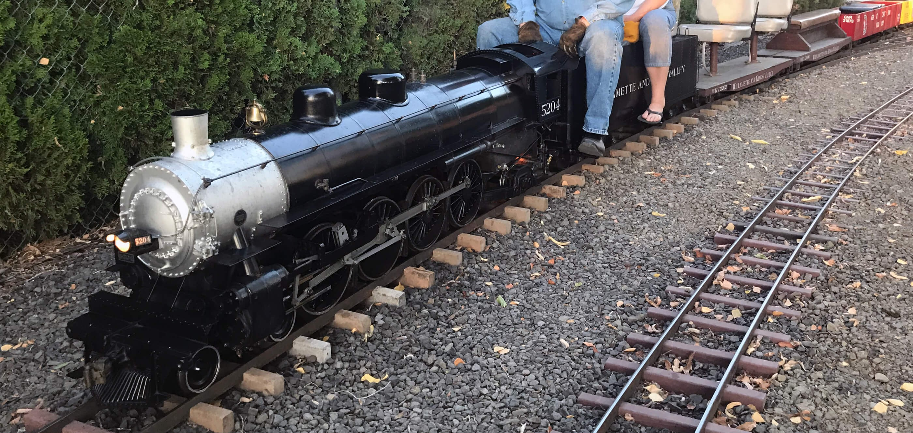

Last updated: 7 September, 2025
| Website: | willowcreekrr.org |
| Email: | lowrnu@comcast.net |
| Location: | Willow Creek Railroad Museum, 3995 Brooklake Rd NE, Salem, OR 97303 |
| GPS: | 45.05187771, -122.980594 Round House |
| Phone: | |
| Subject to change. Check website for latest information: | |
| Hours: | Memorial Day - Labor Day Most times when there is an event on the Powerland Heritage Park Campus (weather permitting). |
The Willow Creek Railroad Live Steamers is next door to Powerland Heritage Park, 3995 Brooklake Rd NE, Salem, OR, 97303, where The Great Oregon Steam-Up up is held every year at the end of July/beginning of August. 1